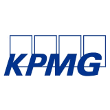
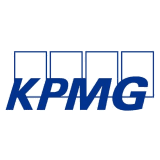

| 梅奥诊所 | 外科中心 | |
| 中伦律师 事务所 | 毕马威中国 | 事务所 |
| 招商银行 | 中国工商银行 | 中国光大银行 |
作为首家以国内医学院的年级同学为共同发起人的医生集团，广州柒玖医疗发展有限公司拥有众多的国内、国际顶级医学专家。专家团成员于1979年进入中山医学院（后并入中山大学）学习，毕业后经过三十多年的临床实践，具备扎实的医学理论基础和丰富的临床经验，在国内医学界享有很高的专业声誉和学术水平，成为各医疗专业和学科的带头人。
柒玖医疗旨在通过不断创新、探索医疗健康服务新模式，为中产阶层和富裕人群专业提供高端医疗服务和大健康管理服务。
1.立足于国内高端医疗健康管理领域，致力于精确健康管理和“循证医疗+精准医疗”实践
2.持续开放股权，不断开发优质医疗、健康管理和先进技术资源
3.为社会、客户、员工、股东创造价值
1.专家资源
2.专业团队
3.公司架构
| 梅奥诊所 | 外科中心 | |
| 中伦律师 事务所 | 毕马威中国 | 事务所 |
| 招商银行 | 中国工商银行 | 中国光大银行 |
广州柒玖医疗发展有限公司
微信公众号：柒玖医疗